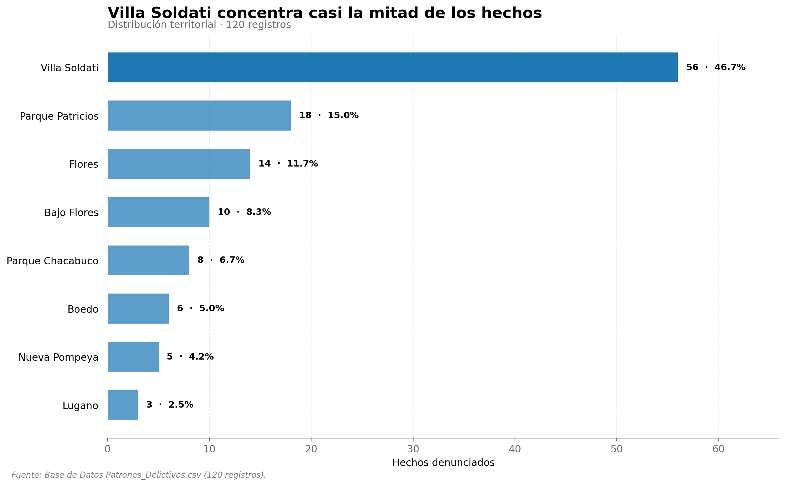
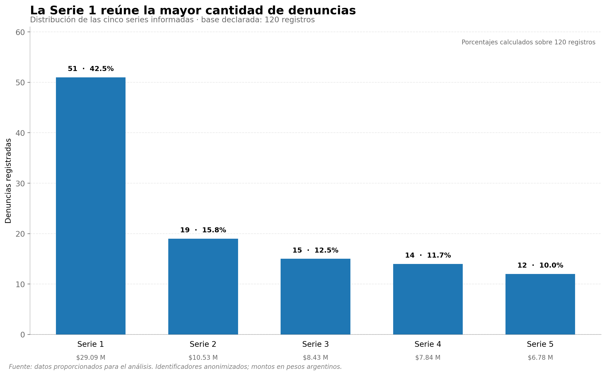

TRABAJO FINAL INTEGRADOR
Análisis delictual: patrones e hipótesis investigativas
Presentación académica de los elementos relevados, su análisis territorial y las líneas de investigación propuestas.
01 / ANÁLISIS ESPACIAL
Mapa del Delito
Distribución geográfica de los hechos relevados y zonas de concentración.
Mapa interactivo · Google My Maps Si no se visualiza, puede abrirse el mapa original.
02 / INDICADORES
Panorama general
Indicadores destacados de la base de análisis informada.
DISTRIBUCIÓN TERRITORIAL
Concentración por barrio

Villa Soldati concentra 56 de los 120 hechos denunciados (46,7%).
DISTRIBUCIÓN FINANCIERA
Hechos por serie

Las cinco series detalladas reúnen 111 registros; quedan 9 sin asignación en este desglose.
SÍNTESIS DEL ABORDAJE
Metodología de análisis
Alcance y criterios de lectura presentados en este trabajo.
El trabajo organiza el análisis descriptivo de los registros informados y relaciona sus dimensiones territorial, temporal, telefónica, financiera y de movilidad. Las recurrencias observadas se presentan como patrones e hipótesis de trabajo, no como prueba de autoría; su corroboración requiere evidencia adicional.
03 / MODALIDAD
Modalidad delictiva
Elementos generales del modus operandi relevado en las denuncias.
Contacto digital
Publicaciones de venta en Marketplace como punto de contacto inicial con las víctimas.
Encuentro presencial
Emboscadas durante encuentros coordinados para concretar la operación de compraventa.
Recaudación virtual
Transferencias y billeteras virtuales aparecen como dimensión financiera relevante del análisis.
04 / ANÁLISIS DE VÍNCULOS
Patrones identificados
Coincidencias y recurrencias que orientan las líneas de investigación.
CONVERGENCIA TELEFÓNICA
3 líneasLas cinco series comparten, según el análisis, tres líneas telefónicas maestras.
11-6469-2197 · 11-6472-0033 · 11-6501-8828
IDENTIDADES DIGITALES
5 titularesSe analiza la posible reutilización de identidades de titulares de CVU en perfiles de publicación.
Coincidencias de perfiles y cuentas receptoras
MOVILIDAD
40 registrosSe señalan dos dominios parciales recurrentes asociados a motocicletas.
AB1*3* · 31 hechos / FG*2* · 9 hechos
CONCENTRACIÓN ESPACIAL
17:00–21:30Franja horaria señalada en Villa Soldati, con recurrencia de Lacarra y vías de escape descriptas.
Villa Soldati · Barrio Fátima / Carrillo
05 / LÍNEAS DE INVESTIGACIÓN
Hipótesis investigativas
H1HIPÓTESIS PRINCIPAL01
Organización criminal estructurada con caja única
Posible asociación integrada por 8 a 10 individuos, con división de roles y tres células territoriales que tributarían a un mismo circuito de recaudación.
H2HIPÓTESIS SECUNDARIA02
Captación de identidades y mulas financieras
Posible utilización de los cinco titulares de CVU como prestanombres, con identidades replicadas en perfiles falsos para generar confianza en las víctimas.
H3HIPÓTESIS ALTERNATIVA03
Apoyo logístico motorizado compartido
Posible empleo compartido de dos motocicletas para el traslado y escape entre jurisdicciones lindantes, especialmente Villa Soldati y Parque Patricios.
06 / ESTRATEGIA
Planificación investigativa
Organización metódica de las acciones para orientar el esclarecimiento de los hechos.
OBJETIVO GENERAL
Organizar las acciones investigativas, optimizar los recursos disponibles y reducir riesgos innecesarios.
Definición de objetivos
Precisar qué se busca conocer y demostrar.
Análisis de antecedentes
Examinar denuncias, bases de datos y fuentes OSINT.
Recolección de información
Seleccionar técnicas, fuentes y responsables.
Recursos y cronograma
Asignar personal, medios y plazos de ejecución.
07 / DOCUMENTACIÓN
Informe de investigación
Documento completo para consulta y descarga.
TRABAJO FINAL INTEGRADOR
Del dato al análisis.
Del análisis a la investigación.
Técnicas Modernas de Investigación Policial
Volver a la portada ↑